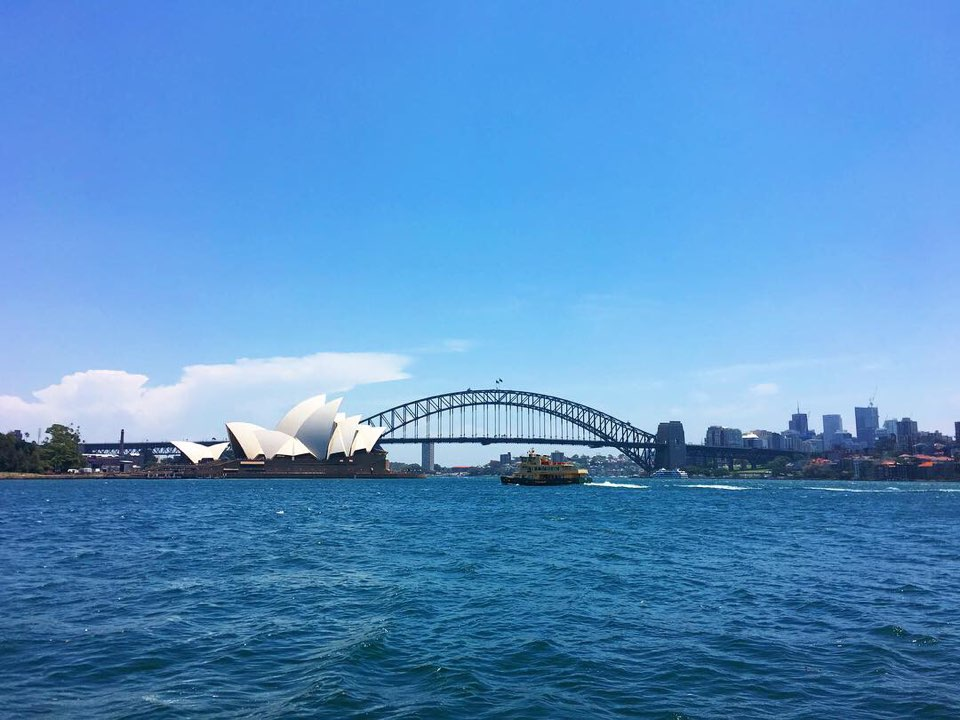
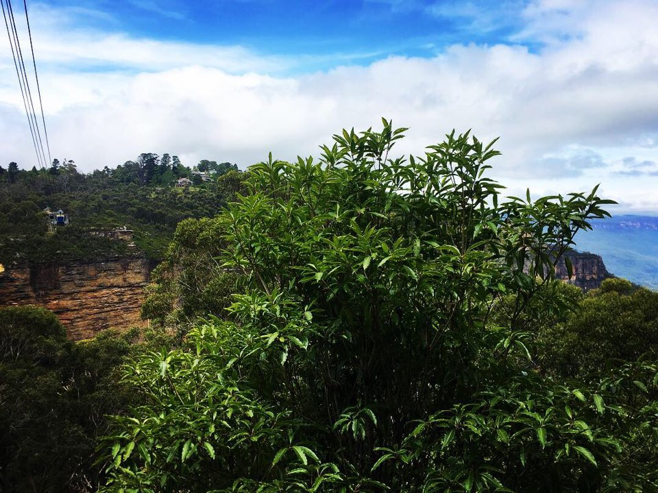
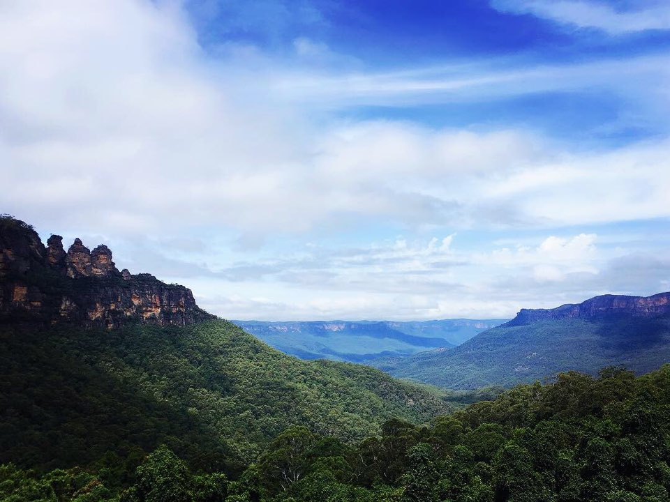
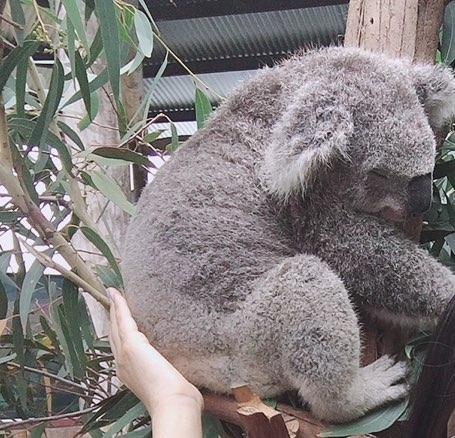
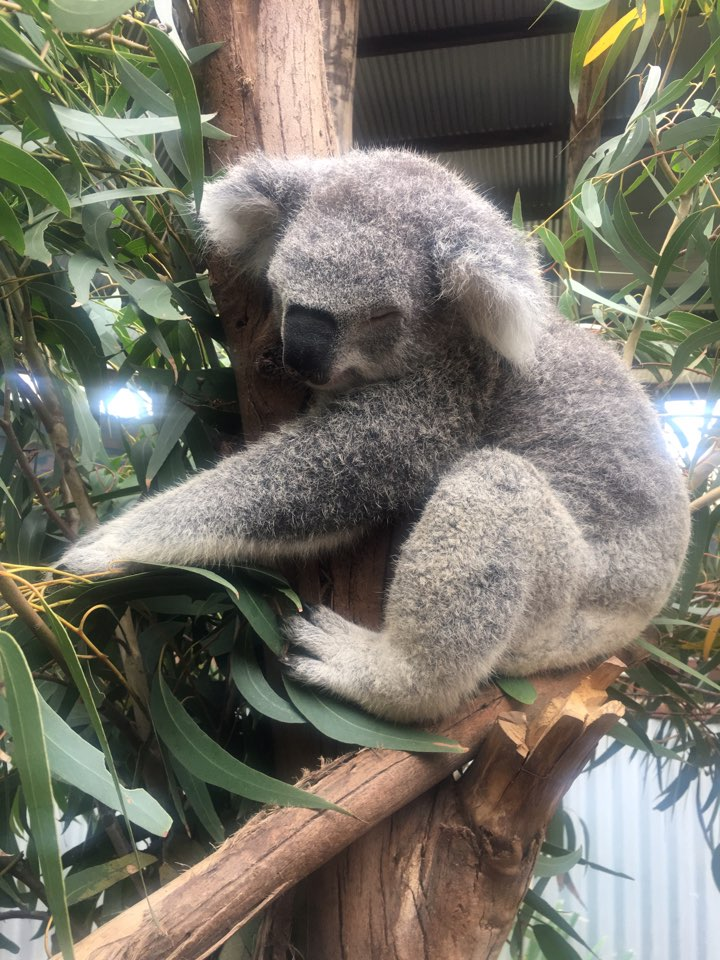
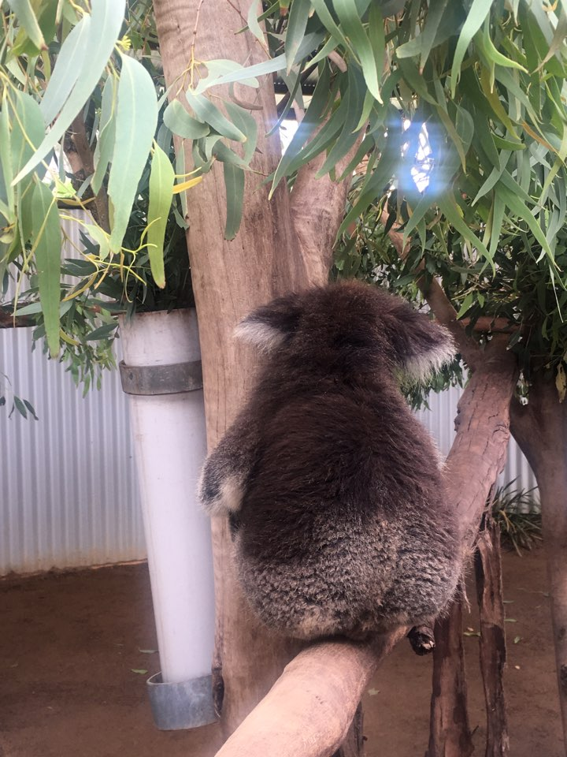

모두 안녕? 나 겨울에 엄마랑 호주 잠깐 갔다왔어!! 근데 그거 알아?^^ 얼마만에 보는 파란하늘이었는지... 미세먼지라고는 정말 눈을 씻고 봐도 볼 수 없는 맑은!! 정말 가만히 숨만 계속 쉬면서 몸 속에다가 저장하고 싶을 정도로 상쾌하고 쾌적한 공기와 새파란 하늘을 쏙 빼다 담아논 것 같은 에메랄드 빛 바다까지 진짜 그야말로 청정 도시라는 말이 딱 들어 맞았어 ..ㅠㅠ 숨만 쉬어도 저절로 건강해지는 것 만 같은 기분이랄까..? (뭔지 알지^^)
  아 호주는 우리랑 계절이 반대야 그래서 거기는 내가 제일 좋아하는 계절인 초여름 ~ 여름 정도 새벽에만 살짝 서늘한 완연한 여름이야! 얼마 만에 보던 파란 하늘과 직사광선 햇빛과 푸르른 나무들이었는지 ㅠㅠㅠㅠ 진짜 감동 ㅠ 한국이 겨울일 때마다 가고싶다는 생각까지 했어 ㅎ 우리는 패키지 여행이라 일정이 다 짜여 있었어. 다 기대되고 재밌어 보였는데 나는 일단 호주 동물원을 가서 코알라 만나는 게 제일 기대됐어! 얼마나 귀여울까 ㅠ

잠자는 호주의 커염둥이 코알라 ><
드디어 코알라를 만나는 날! 가이드분이 설명해 주셨는데, 그거 아니..? 코알라가 평균 20시간 숙면하고 4시간 존다는 거..? 그거 듣고 진짜 어이없었잖아. 게을러 서냐고? 아니?! 엄청 왕 귀여워서지!!><ㅠㅠ 어떻게 그럴 수가 ㅠㅠㅠㅠ 유칼립투스 잎 먹으면서 꾸벅꾸벅 존대 세상에 ㅠㅠㅠ 광광 울어ㅠ 얼굴을 배까지 웅크리고 자는 건 완전 숙면이고 얼굴이 보이는데 눈을 깜빡... 깜빡하거나 감고 있으면 졸고 있는거래...ㅠㅠㅠ 넘 귀엽지 ㅜㅜ

#따뜻 #폭신 #말랑 #포슬 #코알라궁둥이
체험 중에 코알라 엉덩이를 만져볼 수가 있었어 (얼굴 만지는 건 싫어한대!) 근데... 악 ㅠㅠㅠㅠㅠㅠ 머야 머야 고양이 강아지랑은 또 달라 진짜... 따뜻한데 털 때문에 보드랍고 폭신하고 약간 뻣뻣하기도 하면서 말랑말랑, 부들부들 포슬포슬하고.. 똥똥하고.. 진짜 ㅠㅠㅠㅠ 중독성 갑이야 ㅠㅠㅠ 하루 종일 쓰다듬고 같이 낮잠 자고 싶어 ㅠㅠㅠ 자는 모습은 어찌나 천사 같던지 ㅠㅠ 티비에서 보던 것보다 진짜 오조오억배 더 귀여웠어!

그러고 나서 캥거루 먹이도 주고 백조도 보고 알파카도 보고 했는데, 내 마음은 여전히! 여전히!!!! 코알라에 머물러 있었어.. 나중에 호주여행 갈 수 있으면 꼭 가 바. 공기도 너무 좋고 풍경도 아름답고 자연을 실컷 느낄 수 있고 코알라가 귀엽고, 또 코알라가 귀엽고, 뭣보다 코알라가 귀엽고, 아무튼 코알라가 귀여워! ㅋㅋㅋㅋ 그럼 이만 귀여운 코알라 사진 몇 장 더 풀면서 호주여행, 아니 코알라 실물 후기 마칠게~ 헤헷 안뇽-!
 